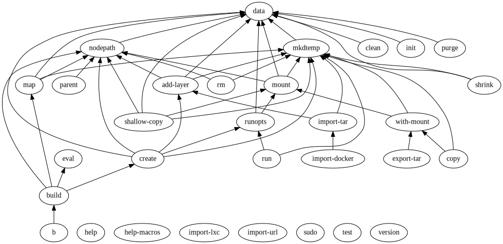

######## ## ### ###### ## ##
## ## ## ## ## ## ## ## ##
## ## ## ## ## ## ## ##
######## ## ## ## ###### #########
## ## ######### ## ## ##
## ## ## ## ## ## ## ##
## ######## ## ## ###### ## ##
Bloatless Containerization Software
Intro
Plash is a small program to build and run containers in Linux. Essentially plash provides a handy interface to create chrooted proccesses without being root. It has its own image build instructions and container runtime. Plash is written in C using minimal dependencies that should allow it to compile and work for decades without any further changes.
Install
cd $(mktemp -d) git clone git@github.com:ihucos/plash.git . make sudo cp dist/plash /usr/local/bin # uninstall sudo rm /usr/local/bin/plash
Help
TODO: move stuff from github to here.
Commands
Build Instructions
| usage: | Plash eval ... |
| --hint | Write a hint for consumer programs |
| --entrypoint | Hint default command for this build |
| --entrypoint-script | Write lines to /entrypoint and hint it as default command |
| --env | Use env from host when running image |
| --env-prefix | Use all envs with given prefix when running image |
| --eval-file | Evaluate file content as expressions |
| --eval-github | Eval a file (default 'plashfile') from a github repo |
| --eval-stdin | Evaluate expressions read from stdin |
| --hash-path | Recursively hash files and add as cache key |
| --import-env | Import environment variables from host while building |
| --invalidate-layer | Invalidate the cache of the current layer |
| --layer | Hints the start of a new layer |
| --mount | Mount filesystem when running image ("src:dst" supported) |
| --run | Directly emit shell script |
| --run-stdin | Run commands read from stdin |
| --write-file | Write lines to a file |
| --write-script | Write an executable (755) file to the filesystem |
| --from | Guess from where to take the image |
| --from-docker | Use image from local docker |
| --from-github | Build and use a file (default 'plashfile') from a github repo |
| --from-id | Specify the image from an image id |
| --from-lxc | Use images from images.linuxcontainers.org |
| --from-map | Use resolved map as image |
| --from-url | Import image from an url |
| --apk | Install packages with apk |
| --apt | Install packages with apt |
| --defpm | Define a new package manager |
| --dnf | Install packages with dnf |
| --emerge | Install packages with emerge |
| --npm | Install packages with npm |
| --pacman | Install packages with pacman |
| --pip | Install packages with pip |
| --pip3 | Install packages with pip3 |
| --yum | Install packages with yum |
| --A | Alias for: --from alpine:edge --apk [arg1 [arg2 [...]]] |
| --C | Alias for: --from centos:8 --yum [arg1 [arg2 [...]]] |
| --D | Alias for: --from debian:sid --apt [arg1 [arg2 [...]]] |
| --F | Alias for: --from fedora:32 --dnf [arg1 [arg2 [...]]] |
| --G | Alias for: --from gentoo:current --emerge [arg1 [arg2 [...]]] |
| --R | Alias for: --from archlinux:current --pacman [arg1 [arg2 [...]]] |
| --U | Alias for: --from ubuntu:focal --apt [arg1 [arg2 [...]]] |
| --f | Alias for: --from [arg1 [arg2 [...]]] |
| --l | Alias for: --layer [arg1 [arg2 [...]]] |
| --x | Alias for: --run [arg1 [arg2 [...]]] |
Command Dependencies
Breadcrumbs
Image editing with gimp
$ plash build --from alpine --apk ttf-ubuntu-font-family gimp --layer --run 'touch /myfile' 112 $ plash run 112 gimp
Run python scripts
plash --from-github ihucos/python -- python myscript.py
Integration with docker
plash export-tar --from alpine | docker import - plash --from-docker busybox
Manage your dotfiles
plash -A py3-pip --layer --pip3 dotfiles -- dotfiles --sync
User namespaces
$ whoami myuser $ plash sudo whoami root
Fetch a container image
$ plash build --from alpine plash: fetching 100% plash: extracting... plash: ignoring dev file: ./dev/null (Operation not permitted) 2
Run something in a container
$ plash run 2 printf 'hello from container\n' hello from container
Automatic filesystem mapping
$ mkdir ~/mydir $ cd ~/mydir $ plash run 2 pwd /home/myuser/mydir
Add layer to existing container
$ plash build --from 2 --run 'touch /myfile' + touch /myfile --: 3
Build and run in one command
$ plash b run --from alpine --run 'touch /myfile' -- ls /myfile /myfile
Shorter invocation
$ plash -Ax 'touch /myfile' -- ls /myfile /myfile
Explicit layering
$ plash -Ax 'touch /myfile' -lx 'touch /otherfile' -- ls /otherfile
Access container root filesystem
$ plash b with-mount -A -- ls bin dev etc home lib media mnt proc root run sbin srv sys tmp usr var
Remove last layer of an image
$ plash b rm --from-github ihucos/python
Create an executable build file
$ cat /tmp/yapf #!/usr/bin/env plash --from-github ihucos/python --pip3 yapf --entrypoint /usr/bin/yapf $ /tmp/yapf myproject
Example of a more complex executable build file
#!/usr/bin/env plash
--from archlinux
--pacman gtk3 python-gobject
--layer
--entrypoint-script
#!/usr/bin/env python
import gi
gi.require_version('Gtk', '3.0')
from gi.repository import Gtk
Gtk.init(None)
Hello = Gtk.MessageDialog(message_type=Gtk.MessageType.INFO,
buttons=Gtk.ButtonsType.OK,
text="Hello world!",
secondary_text="This is running inside a plash container.")
Hello.run()
Macros expand to shell code
$ plash eval --from ubuntu --apt python3-pip --layer --pip3 yapf -lx 'touch /foo' ### plash hint: image=9 apt-get update apt-get install -y python3-pip ### plash hint: layer pip3 install yapf ### plash hint: layer touch /fooLast updated: 2023-01-31